TU/e — Built Environment, Digital Exhibition platform
What changes for visitors
A side-by-side look at the current WordPress site and its Jamstack rebuild, on the same URLs.
Both sites below share the same routes — only the domain differs. Screenshots were taken at a common desktop size (1440px) and a common mobile size (iPhone-class, 390px), on the actual live pages, so what you see here is the real rendered layout on both sides, not a mockup.
/ and /news/
1. Home & News (same page)
- Less empty space above the menu, so the nav no longer gets visually flattened when the viewport is shorter than ~600px tall.
- The search icon and its expanding form now animate smoothly instead of snapping open.
- The hero title is slightly smaller, so it doesn't dominate the fold as much.
- Every post card in the grid is now the same height — no more ragged rows.
- Pagination was added to the bottom of the feed: each page shows the hero plus exactly 9 posts, instead of one long unpaginated list.
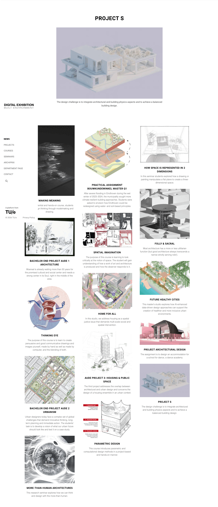
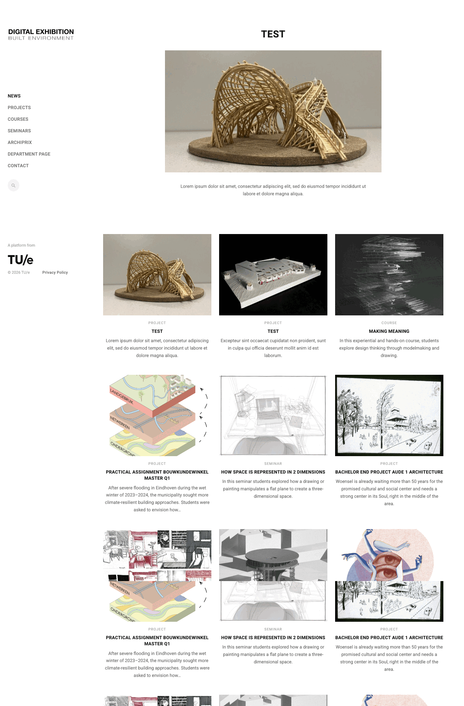
Scroll inside either panel — both are full-page captures. Note the WordPress grid keeps listing posts indefinitely; the Jamstack version stops at 9 + hero and paginates.
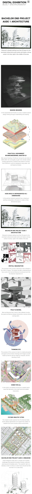
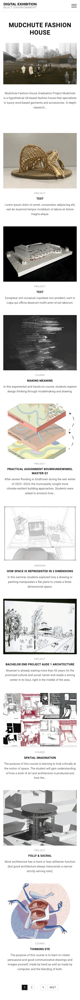
On mobile the same pattern holds: the Jamstack feed ends with numbered pagination (1 2 … 9 NEXT); WordPress keeps scrolling.
Mobile, all pages
2. Mobile navigation
- A smaller, more readable logo in the mobile header.
- A rebuilt hamburger menu: it now opens as a full-height panel instead of a partial dropdown, with a smoother open/close transition and better legibility.
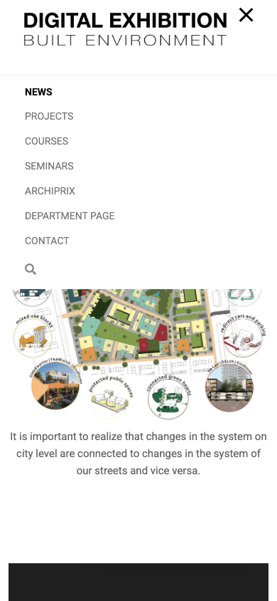
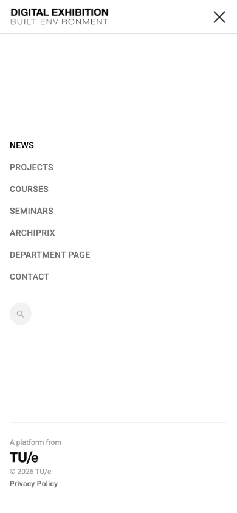
WordPress: the menu panel is only as tall as its content, leaving page content visible underneath. Jamstack: the panel fills the full viewport height, including a footer credit at the bottom — no visual bleed-through.
/seminars/timber-technologies-2019/ · /courses/making-meaning-2025/
3. Single entry layout
The overall structure is kept close to the original — same content, same order — but the proportions and alignment are corrected. Content order, top to bottom:
- Breadcrumbs
- Title (H1)
- Tags (course type, department, year)
- Year switcher, when multiple years exist
- Feature image
- Body text
- Extra information (teachers, students)
- Assets (images, PDFs, carousels)
- The text column (breadcrumbs through body text) is fixed to exactly 50% of the page width, so it lines up with the assets grid below it instead of floating at an arbitrary width.
- Assets generally display in 2 columns; a carousel is the exception — it takes 2/3 of the row, with its related text alongside in the remaining 1/3.
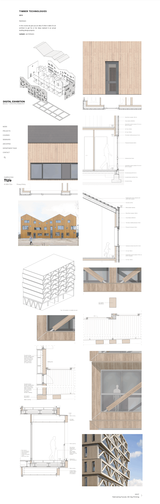
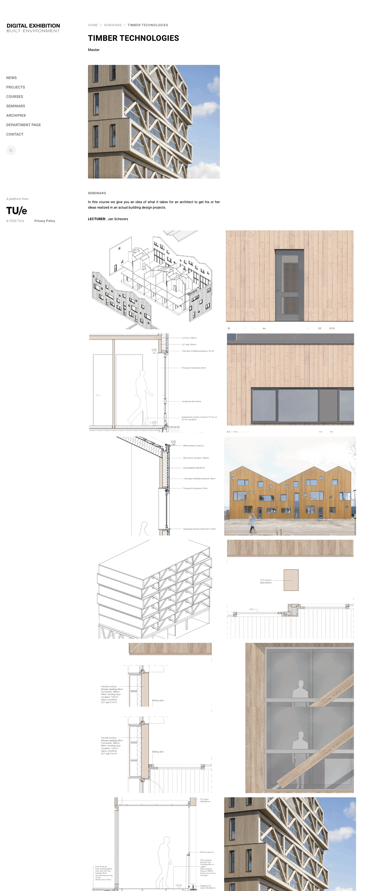
Jamstack adds the breadcrumb trail (Home / Seminars / Timber Technologies) and gives the intro text a fixed-width column that lines up with the image grid beneath it.
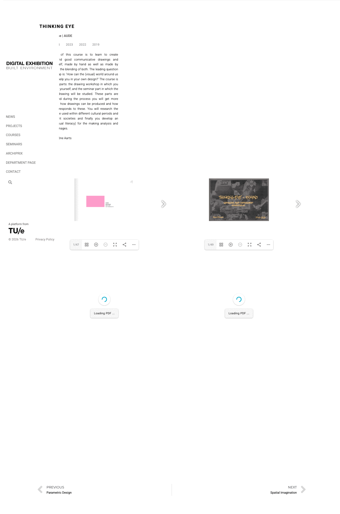
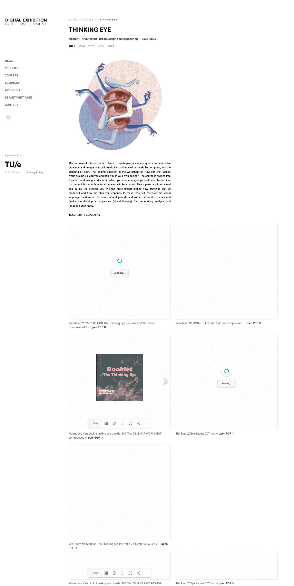
This page shows the width problem most clearly: on WordPress the text column collapses to roughly a quarter of the page, leaving a large unused gap beside it. Jamstack holds it at a consistent 50%.
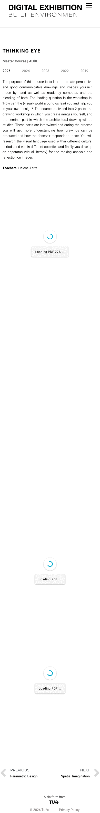
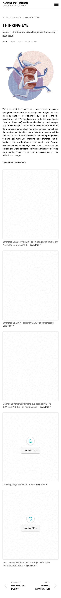
/courses/making-meaning-2025/
4. PDF viewer & asset modal
- The PDF flipbook keeps the same overall approach as the live site (a lazy-loading, page-by-page flipbook), plus a direct "open PDF" link that opens the file itself in a new tab.
- The image/asset modal now shows an index with the asset's title (e.g. "3 / 12 — Section detail"), and zoom behaves more predictably.
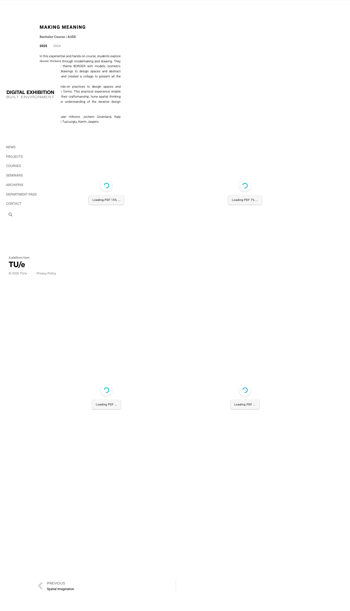
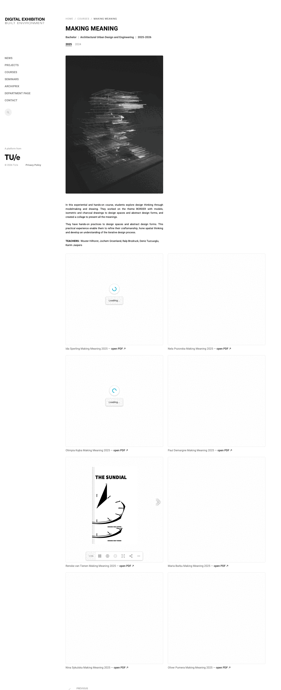
Each PDF entry keeps its own inline preview and gets an "open PDF ↗" link for a direct, new-tab view of the source file — not shown mid-render here since these are large exhibition-poster PDFs that stream in progressively on both sites.
/courses/
5. Course archive & filters
- On mobile, the archive controls — the unit/department filter and the course-type tabs (All / Bachelor / Master) — are now properly aligned in a single row, instead of wrapping into a ragged two-line stack.
- Better alignment between text and images throughout the singular course page (carried over from section 3).
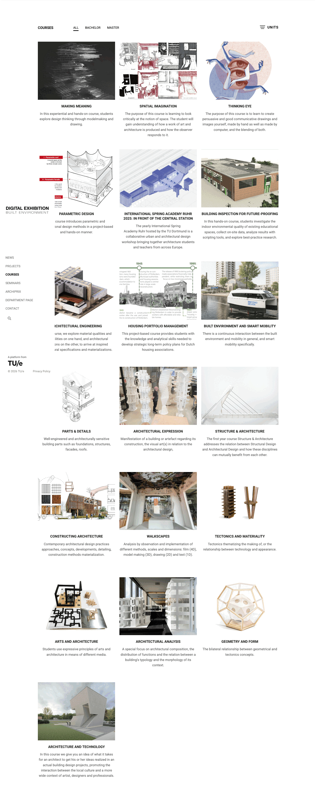
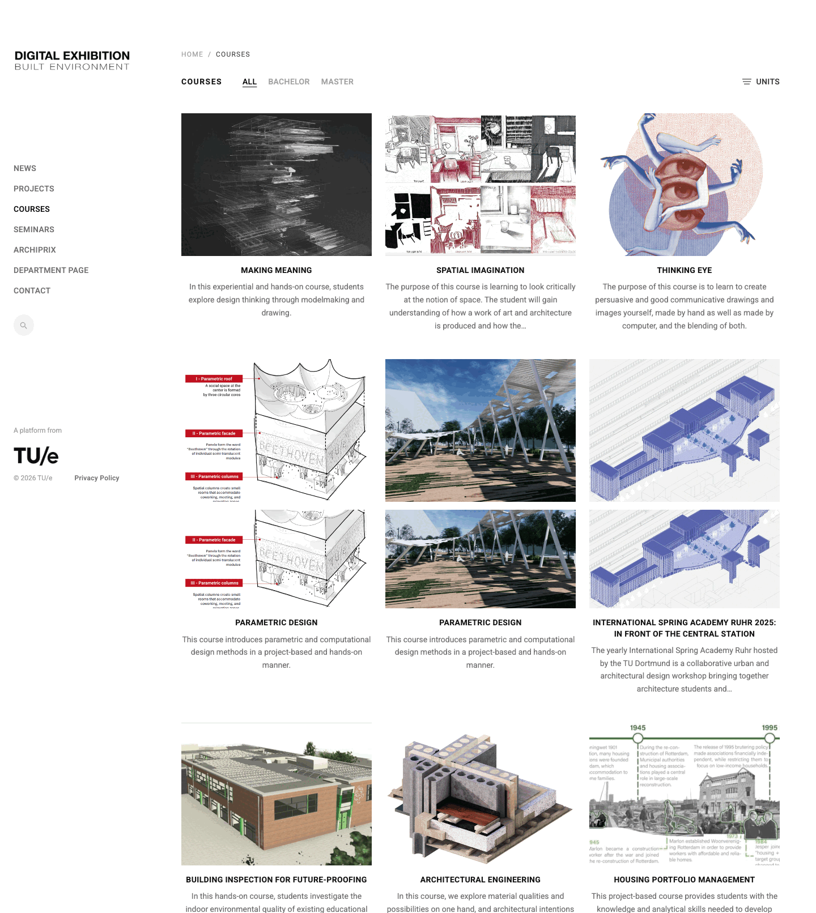
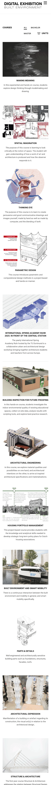
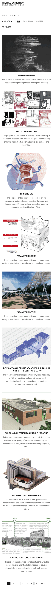
Compare the header block on mobile: WordPress wraps "ALL BACHELOR" onto one line and "MASTER" plus "UNITS" onto another, with inconsistent spacing. Jamstack keeps all three controls aligned on one row under the "COURSES" title.
/sufficiency-consultancy/
6. Multi-project studio layout
Graduation-studio entries like this one list several student projects one after another. The page-level information (breadcrumbs, title, tags, feature image, intro text) still follows the same 50% width rule as any single entry (section 3). What's different is what comes after it: each student project inside the page is its own information + assets pair, repeated down the page:
- Information first — that project's title and description text.
- Assets after — its image carousel, placed next to the text.
The proportions match the assets grid's general carousel exception from section 3: the project's text takes 1/3 of the row and its image carousel takes 2/3 — just repeated once per project down the page, instead of appearing once inside a shared assets grid.
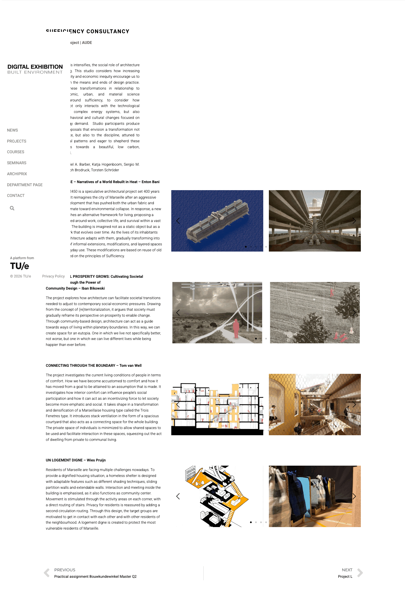
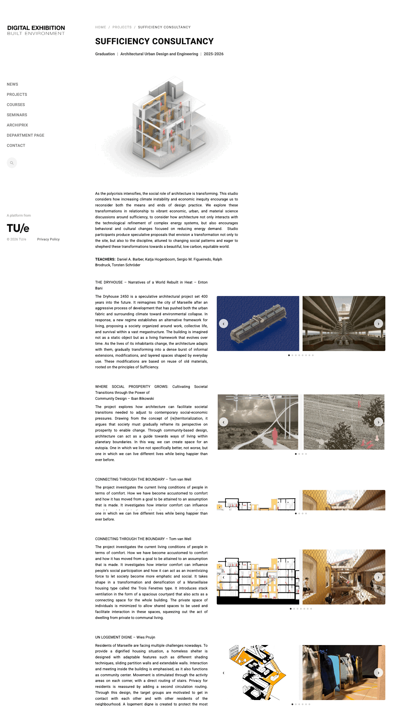
Same repeating text+carousel pattern on both sides. The differences are in the details: WordPress's carousel arrows are bare chevrons with no button background (small, easy to miss); Jamstack gives them a circular button with a visible hit area. WordPress also splits "Graduation Project | AUDE" and the year onto two separate lines; Jamstack keeps the type, department and year on a single tag row, consistent with every other entry type.
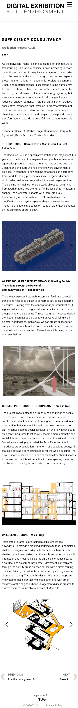
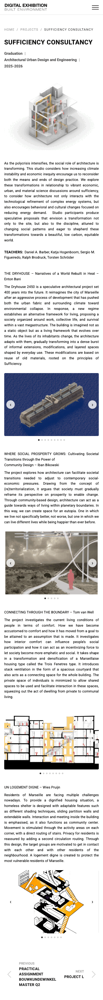
On mobile the 1/3 + 2/3 split collapses on both sites — text and carousel each go full-width, stacked — since there's no room for a side-by-side split at that size.
Summary
| Area | WordPress (current) | Jamstack (new) |
|---|---|---|
| Home / News feed | Unpaginated, grows indefinitely; uneven card heights; larger hero title | Hero + 9 posts per page, paginated; equal-height cards; smaller hero title |
| Header spacing | Fixed top spacing can flatten the menu under ~600px viewport height | Reduced top spacing avoids squashing the menu at short viewport heights |
| Search | Icon/form open abruptly | Smooth open/close transition |
| Mobile logo & menu | Larger logo; menu panel is only as tall as its content | Smaller, readable logo; full-height menu panel, smoother animation |
| Single entry text column | Width varies by page, sometimes far narrower than the assets grid | Fixed at 50% of the page width, aligned to the assets grid |
| Asset grid | 2 columns; no distinct carousel treatment | 2 columns in general; carousel takes 2/3 with its text in the remaining 1/3 |
| Asset modal | Zoom present, no title/index | Index with title, improved zoom |
| PDF viewer | Inline flipbook only | Same inline flipbook, plus a direct "open PDF" new-tab link |
| Course archive filters (mobile) | Type tabs and unit filter wrap into a ragged two-line block | Type tabs and unit filter aligned in one row |
| Course archive pagination | None — full unpaginated list | 9 per page, numbered pagination |
| Multi-project studio layout | Text + carousel per project; bare chevron arrows; tag/year split across two lines | Same 1/3 text + 2/3 carousel pattern; circular arrow buttons; tags on one line |